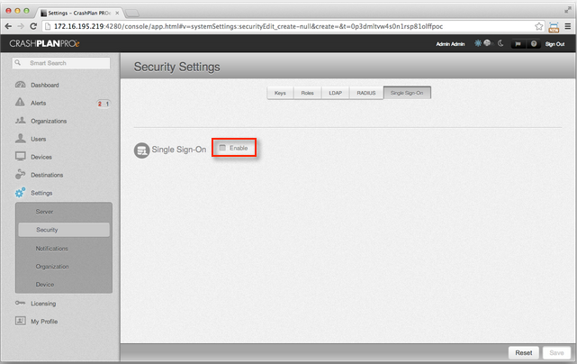
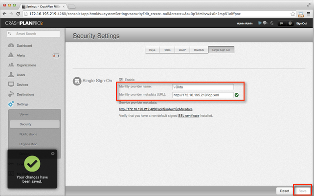
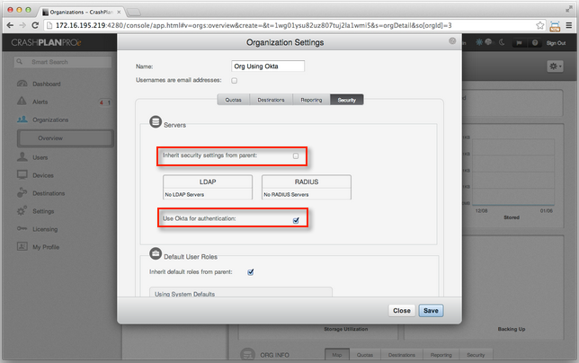

This setup might fail without parameter values that are customized for your organization. Please use the Okta Administrator Dashboard to add an application and view the values that are specific for your organization.
Part 1 – Install the IdP Metadata on Your Server
- Copy and save the following IdP Metadata show below with the filename idp.xml. Put the file on your web server the root directory or in the directory that you plan to make accessible to CrashPlan apps.
Sign into the Okta Admin dashboard to generate this value.
-
Test the URL of the idp.xml file to verify that it is accessible. An example of a URL to test is http://172.16.195.219/idp.xml.
Part 2 – Configure the CrashPlan Pro Security Settings
- Sign into CrashPlan Pro with administrator privileges. Go to Settings > Security > Single Sign-On, then click the Enable checkbox if it is not checked, as shown below.

- Configure the SSO settings for your Code42 environment, as shown below.
- Enter a value for Identity provider name, such as Okta.
- Enter the URL to the IdP metadata file that you verified in step 2, above.
- Click Save.
A message will appear in the lower left of your administration console: "Your changes have been saved."
The Service provider metadata URL becomes visible in your administration console.

- Open the administration console CLI by double clicking the logo in the header of the console.
- In the CLI, enter the following command.
prop.set b42.ssoAuth.nameId.enable true save
The CLI responds with the following message.
The system property has been set.
Some system properties require a restart before they are recognized.
b42.ssoAuth.nameId.enable=true (saved)
- Close the CLI.
Part 3 – Configure Your Code42 Environment to Use Okta SSO Authentication
Your Code42 environment must be configured to use Okta SSO authentication instead of the native user authentication system. This example configures a single organization to authenticate with Okta, but you can also apply these steps with the top-level organization in order to use Okta with your entire Code42 environment.
- In CrashPlan Pro, go to Organizations > Org Details > Edit > Security, as shown below.
-
If the parent organization already uses SSO, enable the Inherit security settings from parent option.
-
If the parent organization does not use SSO, disable the Inherit security settings from parent option.
- Enable the Use Okta for authentication option.

Part 4 – Test the Configuration
After you have completed the setup in Okta and in CrashPlan Pro, test the configuration. You can perform this test anytime.